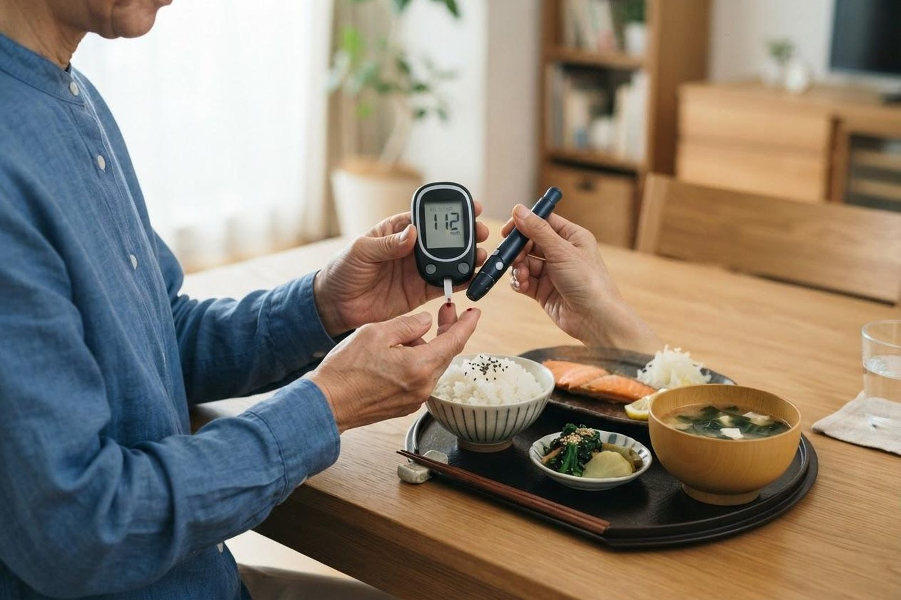

健診で血糖値・HbA1cが高いと言われました。自覚症状はないのですが、放っておくとどうなりますか？
A. 回答血糖値が高い状態は、初期にはほとんど自覚症状が出ないとされています。つまり「症状がないから大丈夫」とは言えないところが、この病気のいちばん難しい点です。日本糖尿病学会では、空腹時血糖値126mg/dL以上、随時血糖値200mg/dL以上、HbA1c（ヘモグロビンエーワンシー：NGSP値）6.5%以上のいずれかにあてはまる場合を「糖尿病型」としています。高い血糖が何年も続くと、神経・目（網膜症）・腎臓といった細い血管の合併症や、脳・心臓の血管の動脈硬化が静かに進んでいくことがあります。逆に言えば、症状のない今の段階で見つかったことは、合併症を防ぐうえで大きな意味があります。治療はいきなりお薬ではなく、まず食事や運動など生活習慣の見直しから始めるのが一般的です。ご相談の窓口は内科です。

血糖値とHbA1cの数値はどう見ればよいですか
健診の結果によく出てくるのが「空腹時血糖値」と「HbA1c」です。空腹時血糖値は採血したその瞬間の値、HbA1cは過去1〜2か月ほどの血糖の平均を反映する値とされており、その日の食事では大きく動きません。日本糖尿病学会が示す判定の目安は次のとおりです。
| 区分 | 空腹時血糖値 | HbA1c（NGSP値） |
|---|---|---|
| 正常とされる範囲 | 110mg/dL未満 | おおむね5.6%未満 |
| 境界域（注意が必要） | 110〜125mg/dL | 5.6〜6.4% |
| 糖尿病型 | 126mg/dL以上 | 6.5%以上 |
食事の時間に関係なく測った「随時血糖値」が200mg/dL以上の場合も糖尿病型とされます。なお、特定健診では空腹時血糖値100mg/dL以上またはHbA1c 5.6%以上が保健指導の目安、空腹時血糖値126mg/dL以上またはHbA1c 6.5%以上が受診をおすすめする目安（受診勧奨判定値）とされています。
ただし、健診で1回高い値が出ただけで糖尿病と確定するわけではありません。同じ採血で血糖値とHbA1cの両方が糖尿病型であれば1回の検査で診断できますが、どちらか一方だけの場合は、日を改めてもう一度検査し、確認したうえで診断するのが原則とされています。
自覚症状がないまま進むのはなぜですか
のどの渇き、水をたくさん飲む、尿の量や回数が増える、体重が減る、疲れやすいといった高血糖の症状は、血糖値がかなり高くなってから現れることが多いとされています。境界域から糖尿病の初期にかけては、体感としてはまったく変わらないまま経過することが珍しくありません。一方で、血管や神経へのダメージは症状の有無とは関係なく少しずつ積み重なっていきます。健診の数値は、この「見えない変化」を知ることができる数少ない手がかりです。
放っておくとどうなりますか（合併症）
高い血糖が続くと、細い血管と太い血管の両方に影響が及ぶとされています。いずれも初期には自覚症状が乏しいのが特徴です。
- 糖尿病神経障害：足先や手先のしびれ、ピリピリする痛み、感覚の鈍さなどが出ることがあります。感覚が鈍ると傷や靴ずれに気づきにくくなり、足のトラブルにつながる場合があります。比較的早い段階から起こりやすいとされています。
- 糖尿病網膜症：目の奥（網膜）の細い血管が傷む合併症で、進行するまで視力の変化が出ないことが多いとされています。成人の視力障害の原因のひとつとして知られており、症状がなくても定期的な眼科での検査がすすめられています。
- 糖尿病腎症：腎臓の働きが少しずつ低下していく合併症です。早い段階では尿にわずかなたんぱく（アルブミン）が出るだけで、むくみなどの症状は現れません。進行すると透析が必要になる場合があります。
- 動脈硬化（脳・心臓・足の血管）：脳梗塞や狭心症・心筋梗塞、足の血管が細くなる病気などのリスクが高まるとされています。高血圧や脂質異常症を合併していると、その影響はさらに大きくなると考えられています。
- 感染症にかかりやすくなる：血糖が高い状態では抵抗力が落ち、歯周病、皮膚や尿路の感染などが起こりやすく、治りにくくなる場合があります。
これらの合併症は、血糖のコントロールを続けることで発症や進行を抑えることが期待できるとされています。早い段階で対策を始めるほど、その効果は得られやすいと考えられています。
こんな項目はありませんか？
- 健診で血糖値・HbA1cを指摘されたが、受診していない
- ご家族（親・きょうだい）に糖尿病の方がいる
- この数年で体重が増えた、おなかまわりが気になる
- 甘い飲み物やお菓子、夜遅い食事が多い
- 運動する習慣がほとんどない
- のどが渇く、尿の回数が増えた気がする
- 足先のしびれ、感覚の鈍さがある
- 健診で血圧やコレステロールも指摘されている
受診の目安
血糖の異常は、症状ではなく数値で判断するのが基本になります。以下を目安にしてください。
すぐに受診を検討してください
- のどの渇きや水を飲む量、尿の量が急に増えた
- 数週間〜数か月で意図しない体重減少があった
- 強いだるさに加えて、吐き気・嘔吐・腹痛、呼吸が荒い、意識がぼんやりする
- 血糖値が著しく高いと指摘された
- 足に治らない傷や潰瘍がある、足の色が悪い・冷たい・強く痛む
- 急に目が見えにくくなった、視野の一部が欠ける
早めの受診をおすすめします
- 健診でHbA1c 6.5%以上、または空腹時血糖値126mg/dL以上と出た
- 健診結果に「要精密検査」「要受診」「要医療」と記載がある
- HbA1c 5.6〜6.4%の境界域で、毎年少しずつ数値が上がっている
- ご家族に糖尿病の方がいる、または肥満・運動不足が気になる
- 妊娠中に血糖が高いと言われたことがある、大きめの赤ちゃんを出産した経験がある
- 手足のしびれ、足の裏の感覚の鈍さ、傷の治りにくさがある
- 以前に指摘されたことがあるが、通院を中断している
- 高血圧・脂質異常症など、ほかの生活習慣病も指摘されている
まずは生活習慣の見直しから
糖尿病型と判定された場合でも、多くはお薬より先に食事と運動の見直しから始めます。境界域の方でも、この段階での取り組みが将来の発症を減らすことにつながると考えられています。
- 食事：1日3食を規則正しく、腹八分目を意識します。甘い飲み物やお菓子を減らす、野菜やたんぱく質から先に食べる、夜遅い食事を控えるなど、続けられる工夫から始めます。
- 運動：ウォーキングなどの有酸素運動を週150分以上、週3回以上を目安に、運動しない日が2日以上続かないように行うことがすすめられています。あわせて筋力をつける運動を週2〜3回組み合わせると効果的とされています。
- 体重：数kgの減量でも血糖の改善が期待できるとされています。無理な目標より、続けられる範囲を設定します。
- 禁煙・節酒・睡眠：喫煙は動脈硬化を進めるとされ、禁煙が強くすすめられています。飲酒量を控えること、睡眠を十分にとることも大切です。
なお、極端な糖質制限や自己流の絶食は、体調を崩したり、ほかの持病に影響したりする場合があります。どこまで・どのように取り組むかは、検査結果を見ながら医師と相談して決めていくことをおすすめします。
当院での対応・検査
いなだ医院は内科を標榜しており、糖尿病をはじめとする生活習慣病の管理を日常的に行っています。健診結果をお持ちいただき、まずは血液検査で血糖値・HbA1cを確認します。あわせて、尿検査（尿糖・尿たんぱく）、腎臓や肝臓の状態、コレステロールや中性脂肪、必要に応じて心電図などで、合併症やほかの危険因子の有無も確認していきます。目の合併症については眼科での検査が必要になりますので、その場合は受診をご案内します。
そのうえで、食事や運動の見直しをどこから始めるかを一緒に決め、数か月ごとにHbA1cなどの数値を確認しながら経過をみていきます。生活習慣の改善だけでは十分でない場合や、数値・合併症の状況からお薬による治療が望ましいと考えられる場合には、内容をご説明したうえでご提案します。糖尿病は長くつき合っていくものですので、かかりつけ医として継続的にご相談いただけます。専門的な治療が必要と判断した場合には、連携する医療機関をご紹介します。
受診にあたってのご案内
- 予約：ご予約なしで当日受診いただけます。
- 検査にかかる時間：問診・診察と採血・尿検査で、目安として30分〜1時間程度です。混雑状況により前後します。
- 空腹時の採血を希望される場合：朝食を抜いてお越しください。当院は朝7時から診療していますので、お仕事前の受診にもご利用いただけます。食事を済ませてお越しになった場合でも、HbA1cは食事の影響を受けにくいため測定できます。
- 費用：糖尿病が疑われる場合の検査・治療は保険診療の対象となります。詳しくはお問い合わせください。
- お持ちいただくもの：健康保険証（マイナ保険証）、健診の結果票、お薬手帳、医療費助成などの受給者証をお持ちの方はその証書。
受診時に伝えていただきたいこと
- いつ、どの健診で指摘されたか（過去数年分の結果があればお持ちください）
- 体重の変化（この1年、数年でどのくらい増減したか）
- のどの渇き、尿の量、だるさ、しびれなど気になる症状の有無
- 現在飲んでいるお薬・サプリメント（お薬手帳をお持ちください）
- ほかに治療中の病気、これまでにかかった病気
- ご家族に糖尿病の方がいるか
- 普段の食事・間食・お酒の様子、運動の習慣、お仕事の時間帯
参考にした情報
健診で血糖値・HbA1cを指摘された方、数値の意味や何から始めればよいか気になる方は、お気軽にご相談ください。
最終更新：2026年8月26日